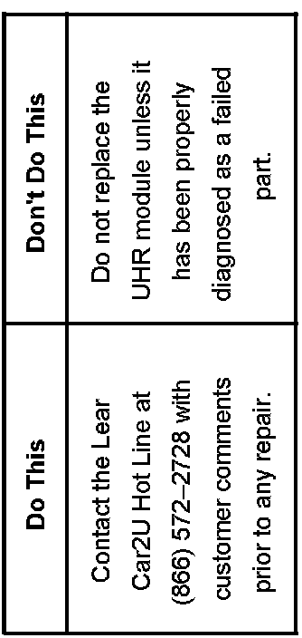

Accessories - Universal Home Remote Diagnostics
Bulletin No.: 07-08-97-001Date: September 28, 2007
INFORMATION
Subject:
Diagnostic Information For a Universal Home Remote (UHR) System That Is Not Operating and J 41450 HomeLink Tester Is Not Communicating With UHR Module
Models:
2008 Buick Lucerne
2007-2008 Cadillac CTS, Escalade Models, SRX, STS, XLR
2008 Cadillac DTS
2007-2008 Chevrolet Avalanche, Corvette, Impala, Malibu, Silverado, Suburban, Tahoe
2007-2008 GMC Sierra, Yukon Models
2008 HUMMER H2, H2 SUT
2007-2008 Saturn AURA
with Universal Home Remote System (RPO UG1)
The purpose of this bulletin is to provide dealership personnel with diagnostic information and procedures for the new Universal Home Remote (UHR) system that is now available on certain 2007 and all 2008 model year vehicles listed above. When diagnosing a UHR system that is not operating, technicians may also find that the J 41540 HomeLink Tester is not communicating with the UHR module. The new UHR module does not have the software capability to communicate with the J 41540 HomeLink Tester.

Technicians should first refer to PIT4073A for overall programming information. Next, contact Lear Car2U Hot Line for assistance prior to any repair. Please have the customer's original comments and your preliminary findings before making the call.
Production Dates For Vehicles With Updated UHR Diagnostic Software
Corvette, XLR, SRX and Model Year 2007 CTS Vehicles built after November 2006
Tahoe, Yukon/XL/Denali/XLDenali, Escalade/EXT/ESC, Avalanche, Suburban Vehicles built after March 2007
Sierra, Silverado Vehicles built after March 2007
Malibu, AURA, Impala, STS Vehicles built after April 2007
Lucerne, DTS, H2 software change incorporated for Model Year 2008

Disclaimer